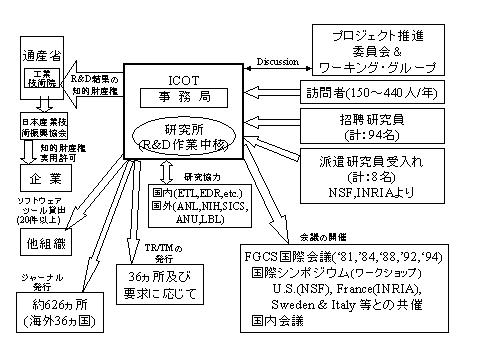

十分公開しているか、という二つの観点から論 じてみたい。前者については、a)(財)新世代コ ンピュータ技術開発機構へ来訪した外国人の推 移、b)海外研究者招聘数の推移等をみる。後者 については、c)ソフトウェア及びＴＲ、ＴＭを 海外へどのように公開しているか、d)海外の研 究機関とどのような研究交流を行っているか、 という観点から論ずる（図４参照）。 a) (財)新世代コンピュータ技術開発機構へ来 訪した外国人の推移 まず(財)新世代コンピュータ技術開発機構へ 来訪した外国人の推移をみると、初年度でさえ 海外からの来訪者が 150人にも及び、海外での このプロジェクトへの関心の高さがうかがえる （表６）。特に1985年頃は世界的な AIブーム となり海外のマスコミ等の来訪も多かった。大 学、産業、専門家の来訪者数は、安定的に推移 しており、海外の研究者の注目度が継続して高 いことが分かる。(財)新世代コンピュータ技術 開発機構の方針として、来訪希望者は国内外問 わず、受け入れることとしていたことも関係し |
ていよう。 b) 海外研究者の招聘数の推移 次に（財）新世代コンピュータ技術開発機構 へ招聘された海外研究者の推移を表７に示す。 海外研究者招聘制度は、(財)新世代コンピュー タ技術開発機構が資金を出し、毎年７〜８名の 第一線の海外の研究者を約１ヵ月招聘し、意見 交換 及び共同研究を行うことを 目的に作られ た。表７をみるとアメリカを始め方々の国々か ら毎年招聘されていることが分かる。プロジェ クト前期では、ロジック・プログラミングの分 野で先駆的な研究を行っていた大家を招聘し、 同機構側が 勉強する という色合いが濃かった が、中期以降は同機構の研究成果が具体化され るにつれて、招聘した第一線の活発な若手研究 者と対等の立場で活発な意見交換をするケース が多くなった（岩田[1991]）。 上記以外にも、(財)新世代コンピュータ技術 開発機構では、 米国国立科学財団（NSF）、仏 国国立情報処理 ・自動化研究所（INRIA）、英 国貿易省（DTI）の 情報工業通産局（IED） と |

- 124 -